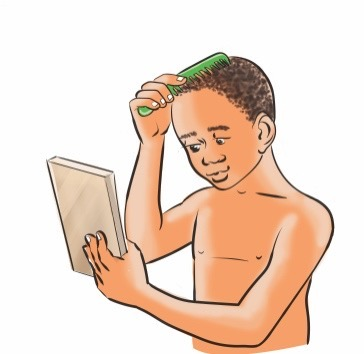

Questions


Questions
1. What have you learned from pictures 1–7, or what have you identified from the steps for cleaning and caring for hair?
2. Why is it important to wash your hair?
Sing the following song, then answer the question that follow.
Song
I like my hair.
I wash my hair using soap and water.
I apply hair oil to make it shine.
I comb my hair using a comb.
Question
Mention the items used for washing hair from the song.